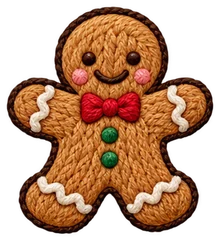

THREE STORIES, ONE BRACELET
세 가지 이야기가
세 가지 이야기가
하나의 팔찌가 됩니다.
01
Looking back, 2026
2026년 돌아보는 나
나의 ID(IDENTITY) 검사로 올 한 해, 내가 어떤 마음으로 움직이고 무엇에 흔들렸는지 차분히 돌아봐요.
02
Getting ready, 2027
2027년 준비하는 나
사주로 다가올 2027년의 흐름을 읽고, 새해의 나에게 필요한 기운이 무엇인지 살펴봐요.
03
Made just for me
나만을 위한 소원팔찌
두 이야기를 컬러·원석·매듭·참으로 엮어, 손목 위에 나만의 소원을 묶어 드려요.